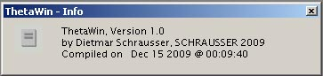
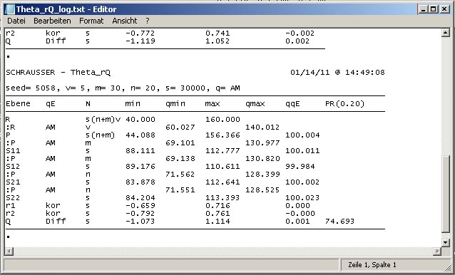

Graphical user interface for Theta applications (Schrausser, 2009) within ConsoleApp_DistributionFunctions (Schrausser, 2024),
generating distributions and estimators for several parameters via bootstrap method, with given number of resamples , where bootstrap estimator
introduced by Efron (1979, 1981, 1982) as a further development of the Jackknife method (Quenouille, 1949). See also Monte-Carlo Methode (Metropolis & Ulam, 1949) and permutation or randomization tests, first mentioned by Fisher (1935), based on his own account of experiments in agriculture (Fisher, 1926) and the work by Neyman (1923).
In this context see further Pitman (1937a, b, 1938), Fisher (1966, 1971), Efron et al. (1992), Good (2006), Edgington and Onghena (2007), Beasley and Rodgers (2009), Oneto (2020) or Kauermann et al. (2021). A fundamental comparative overview of the different methods and approaches is given by Schrausser (1996, 2025, res.).




Usage: Theta [sd] [min] [max] [qq] [q] [v] [s] [[x]] [[g]]
[sd] ........... Seed: |0| Zeitwert
[min] ........... R Minimalwert
[max] ........... R Maximalwert
[qq] ........... Theta-Theta/
[q] ........... Theta:
|0| Harmonisches Mittel (HM)
|1| Arithmetisches Mittel (AM)
|2| Summe (SUM)
|3| Standardabweichung (SD)
|4| Populationsvarianzschaetzung (VAR)
|5| Produktsumme(PSM)
|6| Geometrisches Mittel(GM)
|7| Schrausser's d (D)
|8| DvarO (DV)
[v] ........... n zu Theta (v)
[s] ........... n Subpopulationen (s)
[x] ........... Vergleichswert x
[g] ........... |1| Wertebereich ganzzahlig
Usage: Theta_Q [sd][min][max][qq][qp][qs1][qs2][qQ][v][m][n][s] [[x]] [[g]]
[sd] ........................... Seed: |0| Zeitwert
[min] ........................... R Minimalwert
[max] ........................... R Maximalwert
[qq] ........................... Theta-Theta/
[qp] ........................... Theta P/
[qs1] [qs2] ..................... Theta S1, S2:
|0| Harmonisches Mittel (HM)
|1| Arithmetisches Mittel (AM)
|2| Summe (SUM)
|3| Standardabweichung (SD)
|4| Populationsvarianzschaetzung (VAR)
|5| Produktsumme(PSM)
|6| Geometrisches Mittel(GM)
|7| Schrausser's d (D)
|8| DvarO (DV)
[qQ] ........................... Theta Q:
|1| Differenz
|2| Quotient
|3| Summe
|4| Produkt
[v] ........................... n zu Theta P (v)
[m] ........................... n zu Theta S1 (m)
[n] ........................... n zu Theta S2 (n)
[s] ........................... n Subpopulationen (s)
[x] ........................... Vergleichswert x
[g] ........................... |1| Wertebereich ganzzahlig
Usage: Theta_Qv [sd][min][max][qq][qp][qs1][qs2][qQ][QQ][v][n][s] [[x]] [[g]]
[sd] ........................... Seed: |0| Zeitwert
[min] ........................... R Minimalwert
[max] ........................... R Maximalwert
[qq] ........................... Theta-Theta/
[qp] ........................... Theta P/
[qs1][qs2]....................... Theta S1, S2/
[qQ] ........................... Theta Q:
|0| Harmonisches Mittel (HM)
|1| Arithmetisches Mittel (AM)
|2| Summe (SUM)
|3| Standardabweichung (SD)
|4| Populationsvarianzschaetzung (VAR)
|5| Produktsumme(PSM)
|6| Geometrisches Mittel(GM)
|7| Schrausser's d (D)
|8| DvarO (DV)
[QQ] ........................... Theta Theta Q:
|1| Differenz
|2| Quotient
|3| Summe
|4| Produkt
|5| Korrelation
|6| Kovarianz
|7| Determinationskoeffizient
|8| Redundanz
[v] ........................... n zu Theta P (v)
[n] ........................... n zu Theta S1,S2 (n)
[s] ........................... n Subpopulationen (s)
[x] ........................... Vergleichswert x
[g] ........................... |1| Wertebereich ganzzahlig
Usage: Theta_rQ [sd][min][max][qq][qp][q11][q12][q21][q22][qr1][qr2][qQ][v][m][n][s] [[x]] [[g]]
[sd] ....................... Seed: |0| Zeitwert
[min] ....................... R Minimalwert
[max] ....................... R Maximalwert
[qq] ....................... Theta-Theta/
[qp] ....................... Theta P/
[q11][q12] .................. Theta S11, S12/
[q21][q22] .................. Theta S21, S22:
|0| Harmonisches Mittel (HM)
|1| Arithmetisches Mittel (AM)
|2| Summe (SUM)
|3| Standardabweichung (SD)
|4| Populationsvarianzschaetzung (VAR)
|5| Produktsumme(PSM)
|6| Geometrisches Mittel(GM)
|7| Schrausser's d (D)
|8| DvarO (DV)
[qr1][qr2] ...................Theta Regressionen 1,2/
|1| Korrelation (kor)
|2| Kovarianz (cov)
|3| Determinatinskoeffizient (det)
|4| Redundanz (red)
[qQ] ....................... Theta Q:
|1| Differenz (Diff)
|2| Quotient (Quot)
|3| Summe (Summ)
|4| Produkt (Prod)
[v] ....................... n zu Theta P (v)
[m] ....................... n zu Theta S11,S12 (m)
[n] ....................... n zu Theta S21,S22 (n)
[s] ....................... n Subpopulationen (s)
[x] ....................... Vergleichswert x
[g] ....................... |1| Wertebereich ganzzahlig
Usage: Theta_S [sd] [min] [max] [qq] [qp] [qs] [v] [m] [s] [[x]] [[g]]
[sd] ...................... Seed: |0| Zeitwert
[min] ...................... R Minimalwert
[max] ...................... R Maximalwert
[qq] ...................... Theta-Theta:
[qp] ...................... Theta P/
[qs] ...................... Theta S/
|0| Harmonisches Mittel (HM)
|1| Arithmetisches Mittel (AM)
|2| Summe (SUM)
|3| Standardabweichung (SD)
|4| Populationsvarianzschaetzung (VAR)
|5| Produktsumme(PSM)
|6| Geometrisches Mittel(GM)
|7| Schrausser's d (D)
|8| DvarO (DV)
[v] ..................... n zu Theta P (v)
[m] ..................... n zu Theta S (m)
[s] ..................... n Subpopulationen (s)
[x] ..................... Vergleichswert x
[g] ..................... |1| Wertebereich ganzzahlig
Beasley, W. H., & Rodgers, J. L. (2009). Resampling Methods. In The Sage Handbook of Quantitative Methods in Psychology, edited by Millsap, R. E., & Maydeu-Olivares, A., 362–86. Thousand Oaks, California: Sage Publications Ltd. https://psycnet.apa.org/doi/10.4135/9780857020994.n16
Edgington, E. S., & Onghena, P. (2007). Randomization Tests. 4th ed. New York: Chapman and Hall/CRC. https://doi.org/10.1201/9781420011814
Efron, B. (1979). Bootstrap Methods: Another Look at the Jackknife. The Annals of Statistics, 7(1), 1–26. https://doi.org/10.1214/aos/1176344552
———. (1981). Nonparametric Estimates of Standard Error: The Jackknife, the Bootstrap and Other Methods. Biometrika, 68(3), 589–99. https://doi.org/10.1093/biomet/68.3.589
———. (1982). The Jackknife, the Bootstrap and Other Resampling Plans. CBMS-NSF Regional Conference Series in Applied Mathematics, Monograph, 38. Philadelphia: SIAM, Society for Industrial and Applied Mathematics. https://doi.org/10.1137/1.9781611970319
Efron, B., & Kotz, S., & Johnson, N. L. (1992). Bootstrap Methods: Another Look at the Jackknife. In Breakthroughs in Statistics: Methodology and Distribution, 569–93. New York, NY: Springer New York. https://doi.org/10.1007/978-1-4612-4380-9_41
Fisher, R. A. (1926). The Arrangement of Field Experiments. Journal of the Ministry of Agriculture, 33, 503–15. https://doi.org/10.23637/rothamsted.8v61q
———. (1935). The Design of Experiments. 1st ed. Edinburgh: Oliver & Boyd. https://psycnet.apa.org/record/1939-04964-000
———. (1966). The Design of Experiments. 8th ed. Edinburgh: Hafner. https://scirp.org/reference/referencespapers.aspx?referenceid=895747
———. (1971). The Design of Experiments. 9th ed. New York: Hafner Press. https://home.iitk.ac.in/~shalab/anova/DOE-RAF.pdf
Good, P. (2006). Resampling Methods. 3rd ed. Basel: Birkhäuser. https://www.amazon.com/Resampling-Methods-Practical-Guide-Analysis/dp/0817643869
Kauermann, G., Küchenhoff, H., & Heumann, C. (2021). Bootstrapping. In Statistical Foundations, Reasoning and Inference: For Science and Data Science, 197–229. Cham: Springer International Publishing. https://doi.org/10.1007/978-3-030-69827-0_8
Metropolis, N., & Ulam, S. (1949). The Monte Carlo Method. Journal of the American Statistical Association, 44(247), 335–41. https://doi.org/10.1080/01621459.1949.10483310
Neyman, J. (1923). Sur les applications de la theorie des probabilites aux experience agricoles: Essay de principes. Roczniki Nank Polniczek, 10, 1–51. https://link.springer.com/chapter/10.1007/978-94-015-8816-4_10
Oneto, L. (2020). Resampling Methods. In Model Selection and Error Estimation in a Nutshell, 25–31. Cham: Springer International Publishing. https://doi.org/10.1007/978-3-030-24359-3_4
Pitman, E. J. G. (1937a). Significance Tests Which May Be Applied to Samples from Any Populations. Supplement to the Journal of the Royal Statistical Society, 4(1), 119–30. http://www.jstor.org/stable/2984124
———. (1937b). Significance Tests Which May Be Applied to Samples from Any Populations. II. The Correlation Coefficient Test. Supplement to the Journal of the Royal Statistical Society, 4(2), 225–32. http://www.jstor.org/stable/2983647
———. (1938). Significance Tests Which May Be Applied to Samples from Any Populations: III. The Analysis of Variance Test. Biometrika, 29(3/4), 322–35. http://www.jstor.org/stable/2332008
Quenouille, M. H. (1949). Approximate Tests of Correlation in Time-Series. Journal of the Royal Statistical Society B, Methodological, 11(1), 68–84. https://doi.org/10.1111/j.2517-6161.1949.tb00023.x
Schrausser, D. G. (1996). Permutationstests: Theoretische und praktische Arbeitsweise von Permutationsverfahren beim unverbundenen 2 Stichprobenproblem. Universität Graz: Naturwissenschaftliche Fakultät. https://zenodo.org/records/11529663
———. (2009). ThetaWin Overview. Software. Academia. https://www.academia.edu/81800920
———. (2024). Schrausser/ConsoleApp_DistributionFunctions: Console applicationes for distribution functions (version v1.5.0). https://doi.org/10.5281/zenodo.7664141
———. (2025). Mathematical and Statistical Applications for HP Prime. SocArXiv Papers, August, 1–15. https://doi.org/10.31235/osf.io/vs8a6_v1
ThetaWin
Dietmar Gerald Schrausser23.11.2025